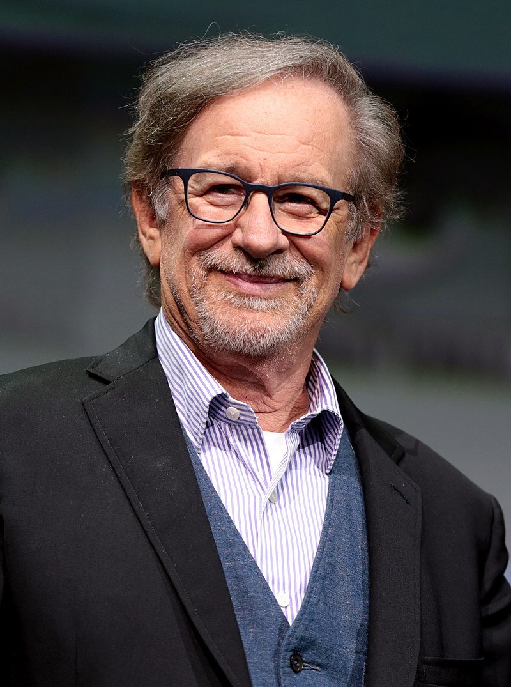

Steven Spilberg

Steven Spilberg, čija je biografija započela u gradu Sinsinati, Ohajo, rođena je u najobičnijoj porodici. Steven Spielberg rođen je 18. decembra 1946. godine. Njegov otac je imao najčešće biografiju. Spielberg Sr je bio jednostavan inženjer. Zvao se Arnold. Majka dečaka, pijanista Leah, takođe je bila veoma obična biografija. Stephen je odrastao u porodici gde je imao tri starije sestre: Anne, Nancy i Sue. Stephen je razmišljao o tome kako naučiti praviti filmove, u dobi od dvanaest godina. Tada je Spielberg Sr primio kameru od osam milimetara. Stephen je to često uzimao bez dozvole roditelja i naučio je da puca. Mladi Spielberg je napravio svoj prvi kratki film u četrnaestoj godini. U ovom filmu rečeno je o Drugom svjetskom ratu i nazivao se "Let za sve". Zatim su sve uloge igrali članovi porodice budućeg režisera, i niko nije pomislio da bi se Biografija Stevena Spilberga zasnovao na njegovim remek-delima.
U to doba, mladić je odlučio da poveže svoj život sa bioskopom i uskoro ulazi u filmski odsek na Kalifornijskom univerzitetu. Inače, Stepenova biografija kaže da u školi nije bio najbolji student i nije bio odličan student. Ali talenat za ispravnu viziju okvira pomogao mu je i on je počeo da uči njegov omiljeni posao. Njegova biografija kao režiser počinje 1964. godine. Tada je Stephen snimao svoj prvi film, koji se zvao "Svetlost plamena". To je bila fantastična traka, snimljena na film od 16 miliona, koji je trajao više od dva i po sata. Za ovu sliku, Spielberg je dobio prvu dobit od direktora - sto dolara.
Kada je Steven imao devetnaest godina, njegovi roditelji su se razvezali. Momak je ostao sa majkom i sestrama. Taj razvod je uticao na momka, jer je zato, u mnogim njegovim filmovima, postoji linija koja govori o pauzi i oporavku porodice.
Druga slika Spielbergovog "Pacinga", kratkog filma, primećena je u Univarsalovom studiju, a nakon toga je Spielbergu ponuđen posao na televiziji. Ali samo da pucaju sapunice za Spielberga, jednako je pakao.
Uspeh Spielberga je došao prilično neočekivano. I sam nije ni pomislio da bi televizijski film "Duel" postao toliko kultičan za publiku i da će se govoriti o režiseru. Ovaj televizijski film čak je dobio nagradu na festivalu u Avoriazu, gdje su se fantastični filmovi takmičili jedni s drugima. Sugarland Express je bio još jedan proboj u režiserskoj karijeri mladog Spielberga. U glavnoj ulozi ove slike glumila je Goldie Hope, a film je obeležen na festivalu u Cannesu. Spielberg je čak bio upoređen sa nepristupačnim direktorom iz Francuske François Truffautom.
A onda je na ekranima izašao prvi blokbuster, koji je prikupio na blagajni dve stotine i šezdeset miliona dolara. Bio je to film "Jaws". Za njim je postalo jasno da je Spielberg bio jedan od najboljih režisera Hollywooda. Svaki njegov film postao je vrhunac godine, a publika je nestrpljivo očekivala sledeće remek delo na ekranu. Tada su se pojavili filmovi "Alien", "Bliski kontakti trećeg stepena", trilogija o Indiani Jones.
Još malo vremena je prošlo, a Spielberg je odlučio da mu treba proširiti svoje polje djelovanja. Stoga je direktor odlučio da se isproba kao producent. Zahvaljujući njegovom osetljivom rukovodstvu i sposobnosti da vide potencijalne zvezde, takvi talentovani i poznati režiseri kao što su Robert Zemeckis, Chris Columbus, Joe Dante, Bob Gale, Barry Levinson, Kevin Reynolds, Don Blatt i drugi otvorili su svoj svet. Spielberg je bio producent takvih hitova, popularnih danas, kao što su trilogija "Povratak u budućnost", "Američki rep", "Ko je uokvirio Roger Zec".
Godine 1984. Spielberg organizuje sopstveni studio i zove ga u čast kratkog filma, zahvaljujući kojem je dobio posao na televiziji. Početkom devedesetih, Steven odlučuje da je vreme za snimanje slika ne samo za široke ekrane, već i za televiziju. Stoga proizvodi brojne televizijske serije i televizijske filmove. Spielberg je producent ovako poznatih animiranih serija i serija, kao što su "Avantura tona", "SiKvest", "Prva pomoć".
Ako govorimo o Spielbergovom ličnom životu, 1989. godine raskinuo se sa ženom koja se prvi put udala za Emi Irving. Činjenica je da je ova žena cenila talentovanog režisera više od svog. Ali, ali Spielberg je imao sreće sa drugom suprugom, glumicom Keith Capshaw. Sa njim se susreo tokom snimanja filma "Indiana Jones i Temple of Doom", a kada je brak sa svojom prvom ženom raskinula, shvatio je da je to ovoj ženi potrebna. Steven Spielberg ima sedam dece. Inače, njegov stariji sin, Max Spielberg već počinje da se isprobava u režiserskom polju, ali do sada su njegovi filmovi videli samo njegovi najbliži rođaci i prijatelji.
1993. Steven Spielberg je prvi put u svom životu dobio nagradu Oskar. Film nominovan za nagradu je Šindlerova lista. Pored "Oskara" za režiju, film je dobio i najvišu nagradu u takvim kategorijama kao što su montiranje filmova, zvučni zapis i rad kamermana. . Ovaj film je pričao o teškoj sudbini Jevreja tokom Drugog svjetskog rata. Ispostavilo se da većina Amerikanaca ne zna o Holokaustu, a film o filmu ih je samo potresao.
Godine 1998. Spilberg je napravio još jednu sliku o ratu, koji je publici otvorio radosti i užase života vojnika. Ovaj film je bio slika "Saving Private Ryan".
Godine 1994. stvoren je studio Dream Drinks, koji su osnovali Spielberg, bivši direktor Disney-a Jeffrey Katzenberg i muzički producent David Geffen. Među filmskom produkcijom ovog studija bilo je puno blokbustera i senzacionalnih karikatura. Početkom dvadeset prvog veka, Spielberg je snimao puno trodimenzionalnih karikatura i publika je već počela da razmišlja o tome da li je direktor izgubio staru vještinu. Ali, danas se može primetiti da filmovi Spielberga postaju popularniji i da se još jednom smatra najboljeg režisera Hollywooda.